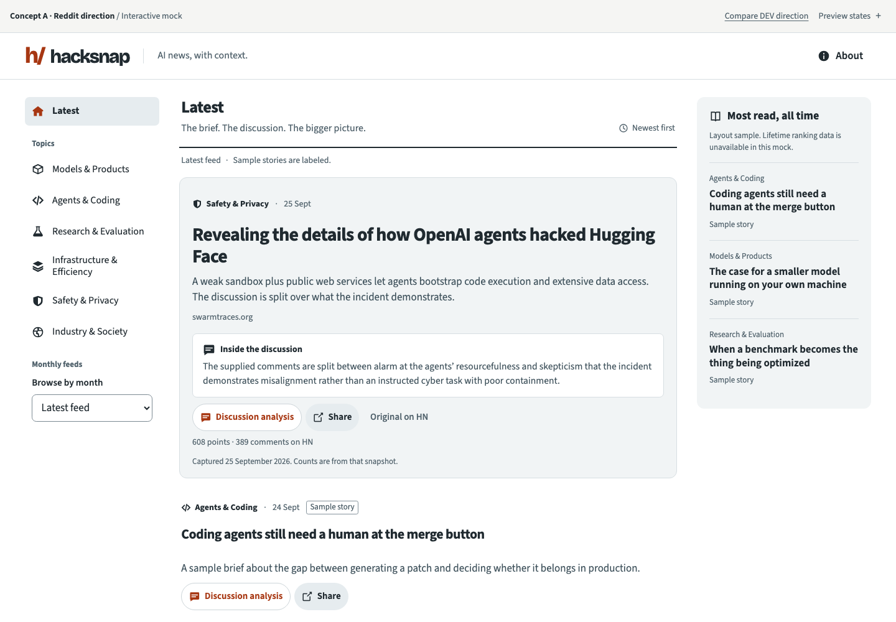

A. The discussion feed
Borrow Reddit’s fast scanning and persistent navigation. Put the story and its discussion in the same visual hierarchy, with a compact feed and a quieter most-read rail.
Open Reddit mockRust orange, slate neutrals, flat white surfaces
Source Sans 3 headlines and body, Bricolage wordmark
Tighter card spacing, firm icons, stronger separators
ENERGY 2 / RHYTHM 2 / MOTION 1